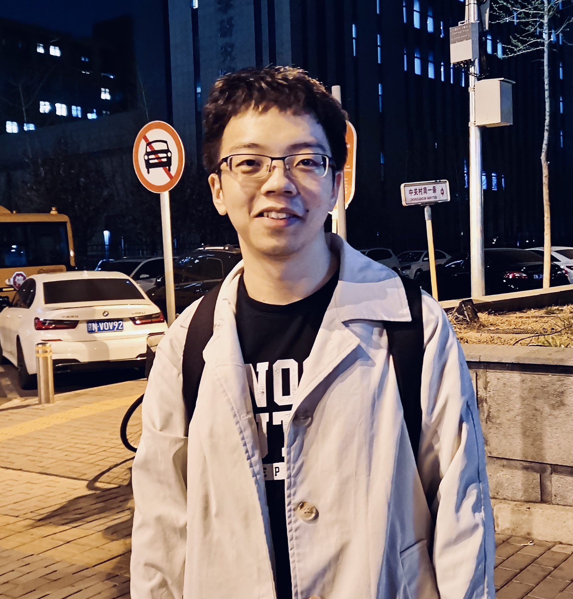

|  |
Ph.D. student, E-mail: xueyaozhang [AT] link.cuhk.edu.cn Curriculum Vitae / Google Scholar / DBLP / GitHub / Zhihu |
|
|
|
I'm a second-year Ph.D. student at the Chinese University of Hong Kong, Shenzhen (CUHK-Shenzhen), supervised by Professor Zhizheng Wu. My ongoing works focus on Singing Voice Conversion (SVC). To know more about SVC, you can read this tutorial and my latest work. Recently, I'm participating in and leading the development of the prototype of the open-source Amphion toolkit. Before CUHK-Shenzhen, I received my master's degree (2019-2022) at the Institute of Computing Technology Chinese Academy of Sciences (ICT, CAS), working on computational social science, especially on Fake News Detection and Fact Checking. My research interests include:
|
|
|
| 2023/12 | My first attempt at leading the development of a large-scale open-source project. |
| 2023/10 | My first paper about singing voice processing got accepted by ML4Audio @ NeurIPS 2023. |
| 2023/04 | I was admitted by Tencent Rhino-Bird Talent Program 腾讯犀牛鸟精英人才计划 (Top 50+ of China). |
| 2022/09 | I entered the Chinese University of Hong Kong (Shenzhen) as a Ph.D. student. |
| 2022/06 | My first paper about music generation got accepted by ACM MM 2022. |
| 2021/11 | I got the National Graduate Scholarship 2021 (funded by Ministry of Education of China). |
| 2021/01 | My first paper about fake news detection got accepted by WWW 2021. |
| 2020/01 | I got the third place at Campus Singer Competition, University of Chinese Academy of Sciences. |
|
✍ Call for Cooperations Our team is broadly interested in Audio/Speech processing and synthesis, DeepFake detection, and AI + Music. We publish our work in the top conferences and journals, and deploy research output to products by collaborating with industry. Our team has open positions for Postdocs, PhD students, Research Assistants, and visiting research students/researchers (more information can be seen here). If you are willing to join our team, feel free to contact wuzhizheng [AT] cuhk.edu.cn. Besides, you are always welcome to discuss any ideas with me. |
|
|
|
|

Xueyao Zhang, Liumeng Xue, Yuancheng Wang, Yicheng Gu, Xi Chen, Zihao Fang, Haopeng Chen, Lexiao Zou, Chaoren Wang, Jun Han, Kai Chen, Haizhou Li, Zhizheng Wu Paper / GitHub / HuggingFace TL;DR: We develop a unified audio generation open-source toolkit. |
|
ML4Audio @ NeurIPS 2023
Xueyao Zhang, Yicheng Gu, Haopeng Chen, Zihao Fang, Lexiao Zou, Liumeng Xue, Zhizheng Wu Machine Learning for Audio Workshop (ML4Audio) at NeurIPS 2023 Preprint / Code / Demo / HuggingFace Space TL;DR: We propose to utilize multiple content features for singing voice conversion. |
|
MM 2022
Xueyao Zhang, Jinchao Zhang, Yao Qiu, Li Wang, Jie Zhou Proceedings of the 30th ACM International Conference on Multimedia (Acceptance Rate: 690/2473=27.9%) PDF / Preprint / Code / Slides / Demo TL;DR: We propose to learn harmony for generating form- and texture- enhanced pop music. |
|
|
WWW 2021
Xueyao Zhang, Juan Cao, Xirong Li, Qiang Sheng, Lei Zhong, and Kai Shu Proceedings of the 30th Web Conference (Acceptance Rate: 357/1736=20.6%) PDF / Code / Slides / Video / Chinese Video TL;DR: We leverage both publisher emotion and social emotion for fake news detection. |
|
CIKM 2021
Qiang Sheng*, Xueyao Zhang*, Juan Cao, and Lei Zhong (*: Equal Contribution) Proceedings of the 30th ACM International Conference on Information and Knowledge Management (Acceptance Rate: 271/1251=21.7%) PDF / Poster / Code / Chinese Blog TL;DR: We propose a graph-based model preference learning framework to separately handle the pattern and fact indicators in fake news detection. |
👉 Full Publications |
|
|
| 2022/10 |
I got the Best Presentation Award at Huawei-CUHKSZ NLP/Speech Workshop. My presentation is about Structure-Enhanced Pop Music Generation via Harmony-Aware Learning. [Slides] [Award] |
| 2022/06 |
I gave a talk at two labs of ICT as an outstanding graduate, 如何做有新意的研究——以“做问题”的视角. [Chinese Blog] [Chinese Slides] The talk was also presented at SDS Early Career Colloquium of CUHK-Shenzhen, Towards a novel research in a problem-driven way. [Slides] |
| 2022/05 |
My master's theis defense, Research on Fake News Detection Based on Emotion (基于情感的虚假新闻检测方法研究). [Chinese Slides] |
| 2021/05 |
I gave a talk about composition at Pattern Recognition Center of Wechat AI, How to create a pop song? (一首流行歌是如何创作的). [Chinese Slides] |
|
|
| WeChat, Tencent |
Research Intern, Pattern Recognition Center of Wechat AI, Beijing, China.
AI+Music Research
|
|
|
| Reviewer |
Conferences:
|
| Teaching Assistant |
|
|
|
| 2022- |
Ph.D. student in Data Science, supervised by
Professor Zhizheng Wu
School of Data Science (SDS), The Chinese University of Hong Kong, Shenzhen (CUHK-Shenzhen) |
| 2019-2022 |
Master in Computer Application Technology (Research-based), supervised by Professor Juan Cao
Institute of Computing Technology Chinese Academy of Sciences (ICT); University of Chinese Academy of Sciences (UCAS) |
| 2015-2019 |
B.Eng. in Software Engineering
School of Computer Science, Wuhan University (WHU) |
| 2012-2015 | Jiyuan No.1 Middle School of Henan |
|
|
| 2022 | Outstanding Graduate, University of Chinese Academy of Sciences & Beijing Municipal Education Commission (Top 5%) |
| 2021 | National Graduate Scholarship, Ministry of Education of China (Top 0.2%) |
| 2020 | Third place at Campus Singer Competition, University of Chinese Academy of Sciences (Top 3 among over 50,000) |
| 2019 | Outstanding Graduate, Wuhan University (Top 10%) |
| 2019 | Excellent Bachelor Thesis, Wuhan University (Top 5%) |
| 2016 | National Undergraduate Scholarship, Ministry of Education of China (Top 0.2%) |
| 2014 | First price in Chinese High School Mathematics League (Top 50 in Henan Province) |
|
|
| #年终总结# |
2022 《2022年：伤痛、时间与起点》
2021 《2021年：收获、决定与困惑 》 2020 《去年》 2019 《2019大事记》 2018 《请回答2018》 2017 《2017流水账》 |
| #哲学思考# |
2020/02/10
《对人工智能艺术创作的哲学思考》
2016/11/24 《为什么有有，没有没有》 |
| #关于大学# |
2019/10/02 《后大学时代》
2018/08/04 《的大学》 |
| #关于高考# |
2017/10/20 《后高考时代｜感情篇》
2016/05/02 《后高考时代｜思辨篇》 2016/04/26 《后高考时代｜离别篇》 |
|
|
| Visualized Machine Learning | Jay Alammar Distill |
| Institutions | Magenta (Google AI) Sony CSL Music OpenAI DeepMind |
| Individual Bloggers | Lil'Log 科学空间（苏剑林） |